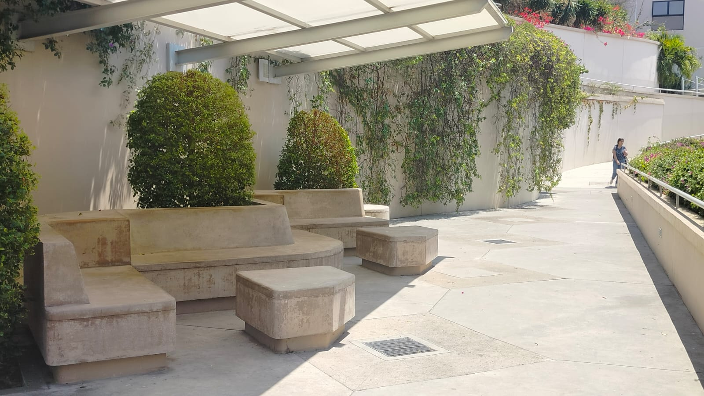
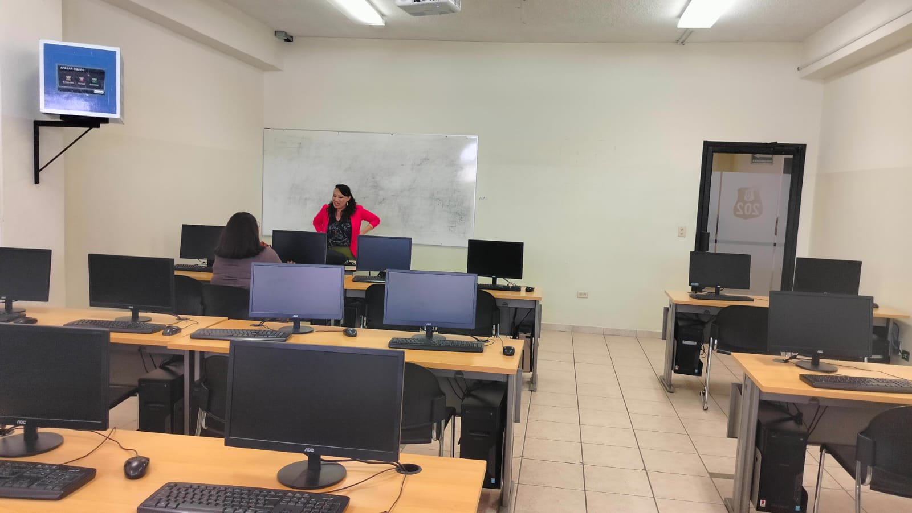
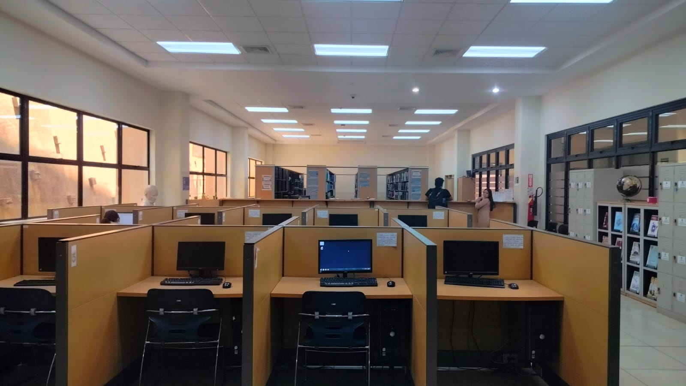
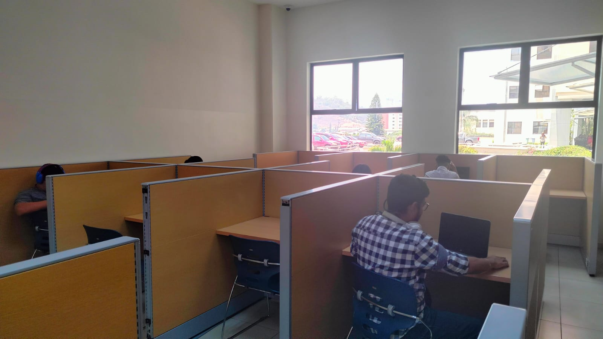
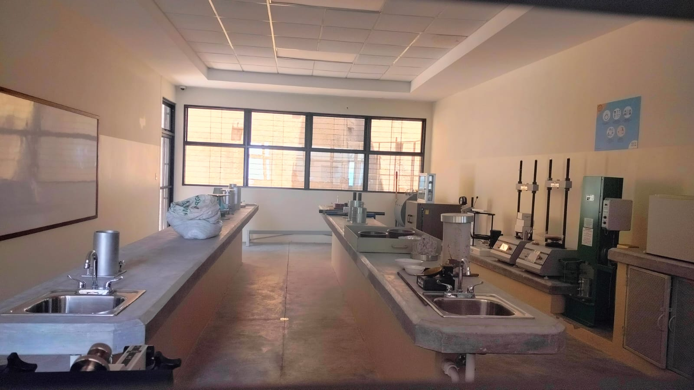

Laboratorio Comidas y Bebidas
Los programas de posgrado en Ciencias de la Nutrición generalmente se concentran en la investigación, el análisis o
la comunicación de la nutrición. Los programas pueden ofrecer varias concentraciones en nutrición y obesidad,
educación nutricional, salud pública y nutrición molecular, por nombrar algunas.
Algunas escuelas están comenzando a agregar una especialidad de vanguardia en cambio climático y nutrición.

Laboratorio de Computadoras
A través de nuestra infraestructura tecnológica proporcionamos laboratorios que incluyen
computadoras virtuales, herramientas y recursos académicos para desarrollar actividades prácticas, requeridas en
cualquiera de los cursos utilizados para el estudio de ciencias tecnológicas.

Laboratorio de Biblioteca
Las computadoras virtuales se proporcionan según sea necesario, exceptuando algunas actividades
prácticas donde se requiere el uso de su computadora física ( personal ), por ejemplo durante el desarrollo de laboratorios
relacionados con aplicaciones móviles y videojuegos.

Laboratorio de Estudio
La unidad encargada de asignar las aulas para la docencia de las titulaciones que imparte la EII es
la Administración del Edificio de Informática y Matemáticas. Las aulas se encuentran distribuidas en tres plantas pero cuentan
con acceso mediante ascensor tanto desde la planta situada a nivel de calle como desde el garaje.

Laboratorio de Química
Un laboratorio químico es un espacio en el que se estudian mezclas de elementos, sustancias y compuestos
para obtener informaciones de carácter científico, generalmente en forma de datos, para la posterior realización de un informe.

Laboratorio de Física Elemental
La infraestructura de los laboratorios tiene que estar diseñada acorde con los requerimientos analíticos,
complejidad de las determinaciones a realizar y bioseguridad, con la finalidad de facilitar el flujo de muestras, la atención a
los usuarios y movilidad de los analistas.